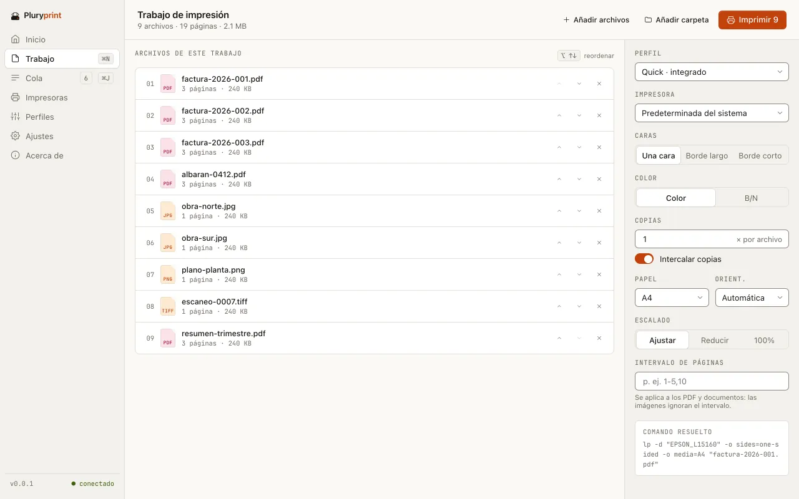
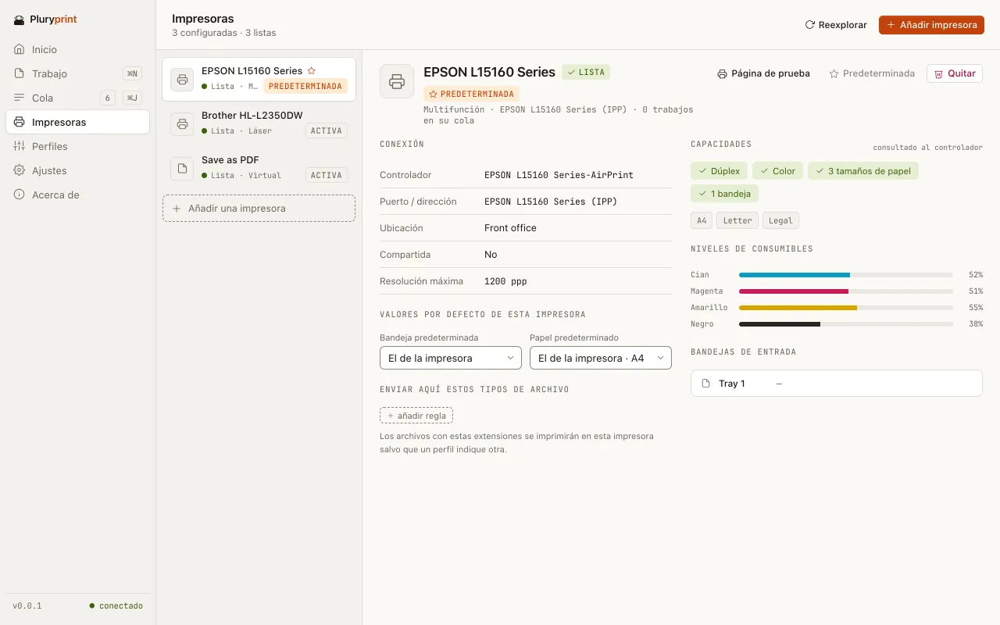
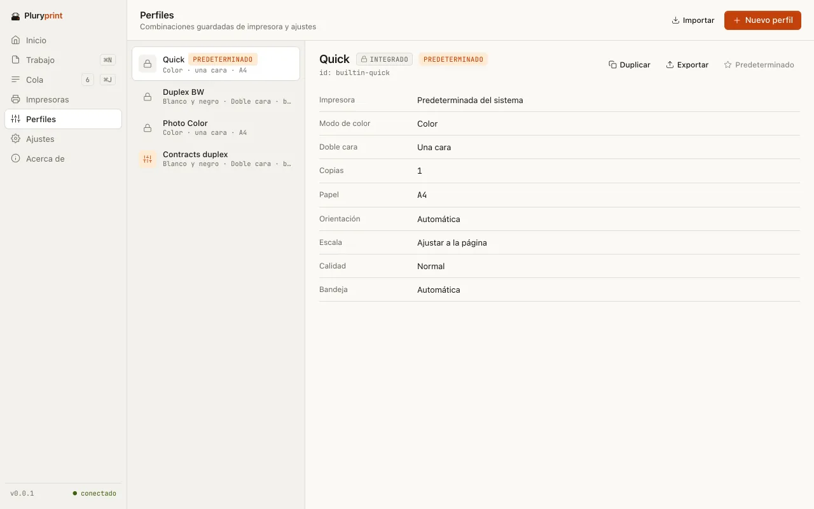

Selecciona 5, 50 o 500 archivos. Imprímelos todos.
Impresión por lotes gratuita para Windows y macOS. Sin límite de 15 archivos, sin Adobe y sin licencia de 149 $.
Gratis · Sin cuenta · Sin telemetría · GPL-3.0
Ilustración: nueve archivos seleccionados en el Finder, el menú Servicios con «Imprimir con Pluryprint», una impresora que saca hojas en abanico en tres direcciones y un contador de la cola que llega a 500 de 500. Detrás, la pantalla Cola de la app.
Sin el tope de los quince.
Selecciona más de unos 15 archivos en Windows y la opción Imprimir desaparece del menú. Las soluciones de pago cuestan de 79,95 a 149 $; las gratuitas están abandonadas o solo imprimen PDF.
Pluryprint recibe la selección entera, sea de 5 o de 500 archivos, y la convierte en un trabajo con un único ajuste de impresión.
- macOS, ya: Finder › Servicios › «Imprimir con Pluryprint», o con el perfil predeterminado. Viene dentro de la app; no hay extensión que activar.
- Windows, pronto: el submenú del Explorador está escrito y probado en CI, sin límite de archivos, pero el instalador aún no lo registra.
- En los dos: arrastra archivos o carpetas a la ventana, con o sin subcarpetas.

Todo pasa en tu equipo.
Sin cuenta, sin nube y sin telemetría. Cada archivo se convierte a PDF en tu ordenador y va directo a tu impresora.
25 extensiones
PDF e imágenes (JPG, PNG, TIFF, BMP, WebP), directos. HEIC, Office, OpenDocument, HTML y Markdown se apoyan en herramientas que tienes que instalar.
Perfiles con nombre
Copias, intercalado, dúplex, color o escala de grises, papel, orientación, escalado e intervalo de páginas. Tres de serie y todos los tuyos, para importar y exportar.
Una cola que no pierde nada
Se guarda en disco y se recupera tras un cierre. Reintenta tres veces (1, 5 y 25 s); si aun así falla, te dice por qué. Ningún archivo se salta en silencio.
Una pantalla para cada paso.
Siete pantallas: Inicio, Trabajo, Cola, Impresoras, Perfiles, Ajustes y Acerca de.
Cola.
Hasta dos conversiones a la vez y una impresión cada vez. Pausa, reanuda o cancela un trabajo o la cola entera, y míralo en lista, tablero o cronología.
Impresoras.
Las del sistema, con su estado, sus capacidades y el nivel de los consumibles. Busca impresoras en red por mDNS o añádelas por IP, y manda cada tipo de archivo a una distinta.

Perfiles.
Quick, Duplex BW y Photo Color vienen de serie. Crea, clona, edita y marca como predeterminado; si borras uno, tienes cinco segundos para deshacerlo.

Y desde un script.
El mismo programa trae una línea de comandos: print, printers, profiles, queue y update, con --help en cada uno, salida --json y códigos de salida fijos. No abre ninguna ventana.
Aún no se añade al PATH: llámalo por la ruta del ejecutable. El nombre del comando puede cambiar antes de la primera versión.
Arrastrar y soltar · Carpetas con subcarpetas · Comando resuelto visible · Avisa si la impresora no admite dúplex o color · Página de prueba · Política de organización · Notificaciones del sistema · Atajos de teclado · Claro, oscuro o sistema · En español e inglés
Las cuentas, claras.
Precios de lista en USD para un usuario, según la web de cada fabricante cuando hicimos nuestra investigación (2026). Pueden haber cambiado: compruébalos antes de decidir. Un guion: no consta.
Desliza la tabla para ver las cuatro alternativas
| Qué se compara | Pluryprint0.0.1 · pre-alfa | Print Conductor | 2Printer | Batch & Print Pro | FolderMill |
|---|---|---|---|---|---|
| Precio | 0 $ | 149 $por volumen, desde 59 $ por usuario | 149 $ | 79,95 $Premium, 109,95 $ | Presupuestopara empresas |
| Código abierto | GPL-3.0cuando se publique | No | No | No | No |
| Formatos | 25 extensionesalgunas necesitan herramientas externas | Más de 90 | Más de 90 | Más de 30 | Más de 90 |
| Desde el menú contextual | Finder › Servicios, síExplorador de Windows: escrito, aún sin instalar | Menú del Exploradorañade archivos a su ventana | Nolínea de comandos | No consta | Nocarpetas vigiladas |
| Línea de comandos | Sí, con --json | Parcial | Sí | Sí | No |
| macOS | Sí | No | No | No | No |
| Cuenta o telemetría | Ninguna | No consta | No consta | No consta | No consta |
Donde otras van por delante: muchos más formatos, años de uso y versiones publicadas. Print Conductor ya se integra en el menú del Explorador de Windows.
La diferencia: gratis y GPL, imprime directamente desde el menú con un perfil en vez de solo cargar archivos en otra ventana, y tiene una entrada nativa en los Servicios del Finder.
Fuentes: Print Conductor · su guía del menú del Explorador · 2Printer · Batch & Print Pro · FolderMill · reseña de gHacks
Aún no se puede descargar.
Pluryprint está en pre-alfa, versión 0.0.1. Todavía no hay una versión pública y el repositorio aún no está abierto. Esta página lo dirá en cuanto lo estén.
- Windows 10 y 11 · x64Se compila en CI. Instalador por usuario, sin permisos de administrador.
- macOS · Apple siliconSe compila y se prueba en CI. .app y .dmg; sin binario universal.
- Windows · ARM64Es un objetivo: se comprueba que compila, pero aún no hay binario.
- LinuxFuera de alcance por ahora.
Sin firma de código: cuando haya versión, SmartScreen en Windows y Gatekeeper en macOS avisarán al abrirla.
Antes de que preguntes.
¿Es gratis de verdad?
Sí. Cuesta 0 $, no pide cuenta y no tiene versión de pago. Su licencia es GPL-3.0.
¿Mis archivos salen de mi ordenador?
No. Pluryprint convierte e imprime en tu equipo. Solo se conecta a internet para buscar actualizaciones (al arrancar, como mucho una vez al día, o desde Acerca de) y, si tú lo pides, para descargar una. No hay telemetría.
¿Necesito Adobe?
No. Los PDF se imprimen tal cual tras comprobar su estructura, y las imágenes se convierten a PDF dentro de la app. En Windows, la impresión usa SumatraPDF; si no lo encuentra, el trabajo se pausa y te lo dice.
¿Por qué Word necesita LibreOffice?
Porque cada archivo se convierte a PDF antes de imprimirse. Para Word, Excel, PowerPoint, OpenDocument, TXT y RTF, Pluryprint usa LibreOffice, que se instala aparte. HTML necesita Edge, Chrome o Chromium (se imprime sin acceso a la red) y Markdown, Pandoc. Si falta algo, el trabajo se pausa y te dice qué instalar.
¿Hay un límite de archivos?
De cantidad, no. Sí hay un tamaño máximo por archivo, que puedes cambiar en Ajustes.
¿Y si un archivo falla?
Se reintenta tres veces, al cabo de 1, 5 y 25 segundos. Si aun así falla, queda en la cola con el motivo. Los archivos que no admite vuelven con una explicación: ninguno se salta en silencio.
¿Funciona con clic derecho?
En macOS, sí: selecciona los archivos en el Finder y elige Servicios › Imprimir con Pluryprint. En Windows, el submenú del Explorador (imprimir N archivos, imprimir con un perfil, configurar el trabajo o añadirlo a la cola) está escrito y probado, pero el instalador aún no lo registra. Windows 10 todavía no tiene alternativa.
¿Funciona en Apple silicon, Windows ARM o Linux?
Apple silicon, sí: es donde se prueba en CI. Windows ARM64 es un objetivo, pero aún no hay binario. Linux queda fuera de alcance por ahora.
¿Por qué avisarán Windows y macOS al abrirlo?
Porque las compilaciones no están firmadas. Cuando haya una versión pública, SmartScreen y Gatekeeper mostrarán un aviso la primera vez.
¿Cómo se actualiza?
La app avisa cuando hay versión nueva y tú eliges: instalar ahora (con la firma verificada, sin permisos de administrador), recordármelo más tarde u omitir esa versión. Nunca se actualiza sola. Todavía no hay un canal de actualizaciones publicado.
Clic derecho. Imprimir todo.
En macOS ya; en Windows, en cuanto el instalador registre el menú.
Gratis · Sin cuenta · Sin telemetría